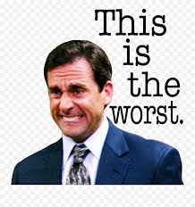

Leitura técnica objetiva das condições de latitude, temperatura, regime de chuvas, solo e topografia, com foco em Olancho (~14°N).
13°–16°NFaixa latitudinal de Honduras
24–30 °CFaixa térmica predominante
1000–1400 mm/anoRegime pluviométrico anual
05–11Meses com maior concentração de chuvas

MontanhasÁreas com maior restrição operacional e mecanização mais limitada.
ValesÁreas mais favoráveis para cultivo e operação mecanizada.
Slide 2 · Localização geográfica
1. Localização e recorte técnico
Latitude
13°–16° N
Região foco
Olancho (~14°N)
Ambiente
Tropical
Objetivo
Base técnica para soja
Slide 3 · Clima geral
Dados climáticos centrais de Honduras para leitura inicial do ambiente.
2. Clima geral: dados objetivos
Temperatura
24–30 °C Faixa térmica predominante em ambiente tropical.
Umidade relativa
70–85% Faixa elevada durante boa parte do período chuvoso.
Radiação
18–22 MJ/m²/dia Alta disponibilidade de energia ao longo do ano.
Janela climática
05–11 Meses com maior concentração de chuvas.
Slide 4 · Fotoperíodo
~14°N indica ambiente de dias relativamente curtos e menor oscilação anual.
3. Fotoperíodo
Efeito esperado: influência direta no florescimento.
Risco agronômico: florescimento precoce em materiais sensíveis.
JanFevMarAbrMaiJunJulAgoSetOutNovDez
Honduras: menor oscilação anualBrasil Sul: maior amplitude anual
Slide 5 · Temperatura
4. Temperatura de Honduras
Faixa
24–30 °C
Radiação
Alta
Variação anual
Baixa
Slide 6 · Regime de chuvas
Regime anual: 1000–1400 mm com estação chuvosa concentrada entre 05–11.
5. Regime de chuvas
Distribuição: concentração no período maio–novembro.
Período seco: dezembro–abril.
☀️
65
Jan
☀️
48
Fev
☀️
42
Mar
⛅
62
Abr
🌧️
126
Mai
🌧️
148
Jun
🌧️
152
Jul
🌧️
144
Ago
🌧️
140
Set
🌧️
136
Out
🌧️
118
Nov
☀️
54
Dez
Slide 7 · Solos
Foco principal: pH, textura e status do solo.
6. Solos
Leitura funcional voltada a profundidade, estrutura e drenagem.
pH
5,5–7,5
Textura
Franco a franco-argiloso
Status
Solos corrigíveis
Slide 8 · Topografia
Predomínio de relevo irregular com cultivo favorecido em áreas de vale.
7. Topografia
Limitação principal: mecanização.
Encerramento · Pergunta técnica
Considerando os dados de Honduras, quais cultivares apresentam melhor ajuste inicial para Olancho?
Pergunta técnica final
Com base em ~14°N, 24–30 °C, 1000–1400 mm/ano, solos franco a franco-argilosos e relevo com predominância irregular, quais materiais de soja devem ser priorizados para validação inicial em Honduras?
Latitude: ~14°N
Temperatura: 24–30 °C
Chuvas: 1000–1400 mm/ano
Enfoque recomendado: priorizar materiais com adaptação tropical, estabilidade fenológica em baixa latitude e arquitetura compatível com as condições reais de Olancho.